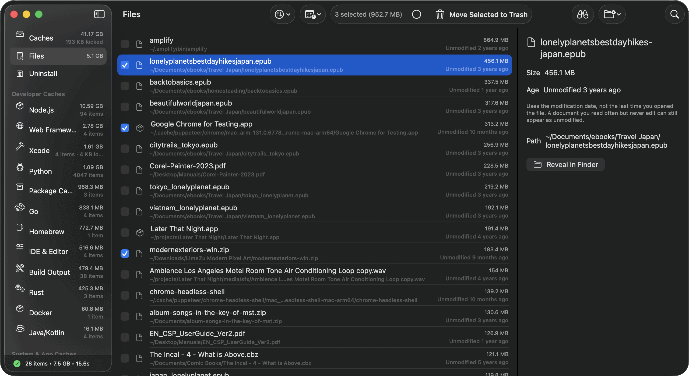
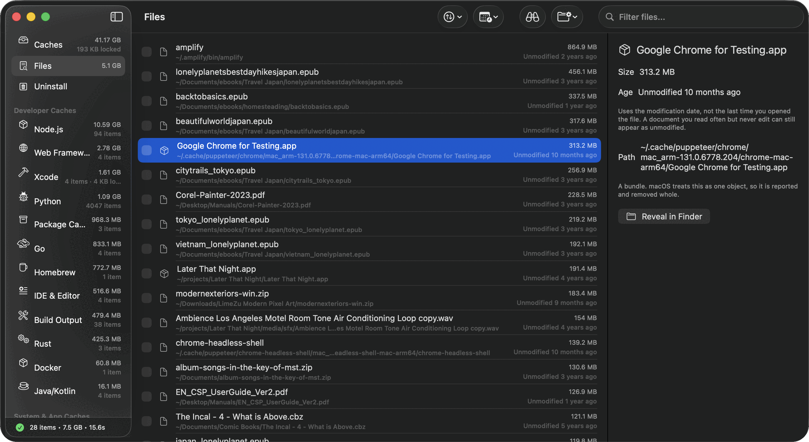

The large files that need your review.
Caches and app leftovers have rules behind them. Large files are different: the disk image you mounted once, the 700 MB of test fixtures in a project you abandoned, the download you meant to open in 2021. DDCC lists them by size and by how long they have sat untouched, then leaves the decision to you.
- 27 items · 14.4s
- Trash only
- You review every row

"Unmodified" is not "unused."
DDCC sorts by modification date because that is the date macOS records reliably. A reference PDF you open every month but never edit can look four years old here. The row labels that caveat before you move anything.
Trash only, by design
This view only moves files to the Trash. Permanent deletion is unavailable because these files were selected by size and age, not by a cleanup rule.
Files and bundles, not folders
A directory of ten thousand small files will not appear as one row. Real space can hide from this view, so the app reports only what it can list.
It skips what Caches already explains
Items already covered by a cache pattern are excluded here, so the same bytes are not reported twice under two different names.
Your documents are protected
Shallow, high-blast-radius folders are refused outright by DDCC's safety guard, whatever the filters say.
This view is a review list, not an automatic cleanup rule.
Filter by size, by age, and by where you point it.
Choose a search root: your home folder, a single project, or an external drive. Set a minimum size and a minimum age, and the list narrows to things worth a decision.
